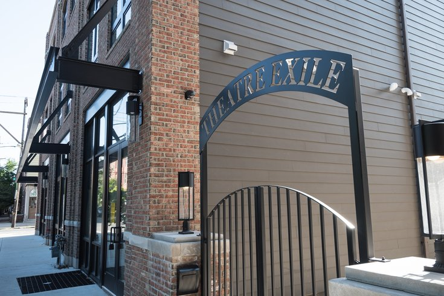

THEATER FINANCING ARCHIVE

WELCOME
This is the Theater Financing Archive. Here, you can access information on the process of financing theaters, including how financial information is archived, by clicking on the "PROCESS" tab. Financial documentables associated with this process can also be viewed by clicking on the "DOCUMENTABLES" tab. Finally, click on the "ABOUT" tab to view a synopsis of this project.
PHOTO: Theatre Exile, Philadelphia, PA